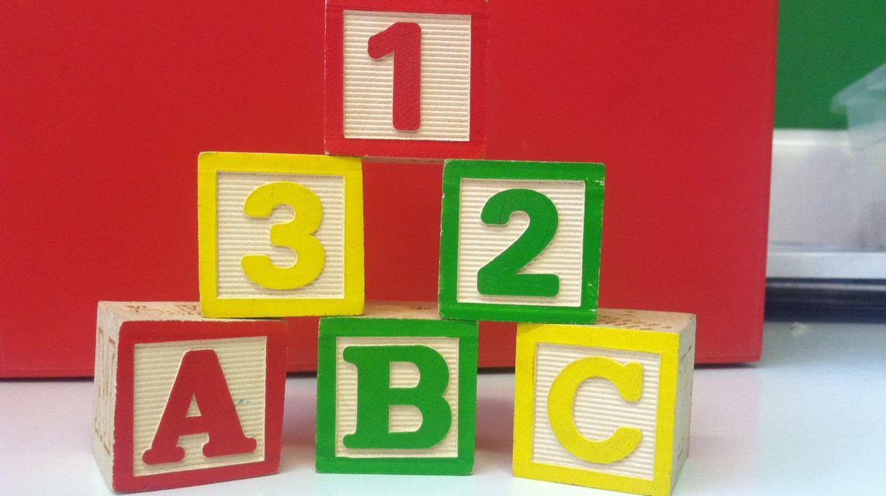

# Kubernetes 默认调度器的优先级与抢占机制
在上一篇文章中，我为你详细讲解了 Kubernetes 默认调度器的主要调度算法的工作原理。在本篇文章中，我再来为你讲解一下 Kubernetes 调度器里的另一个重要机制，即：优先级（Priority ）和抢占（Preemption）机制。首先需要明确的是，优先级和抢占机制，解决的是 Pod 调度失败时该怎么办的问题。
正常情况下，当一个 Pod 调度失败后，它就会被暂时 “搁置” 起来，直到 Pod 被更新，或者集群状态发生变化，调度器才会对这个 Pod 进行重新调度。
但在有时候，我们希望的是这样一个场景。当一个高优先级的 Pod 调度失败后，该 Pod 并不会被 “搁置”，而是会 “挤走” 某个 Node 上的一些低优先级的 Pod 。这样就可以保证这个高优先级 Pod 的调度成功。这个特性，其实也是一直以来就存在于 Borg 以及 Mesos 等项目里的一个基本功能。
而在 Kubernetes 里，优先级和抢占机制是在 1.10 版本后才逐步可用的。要使用这个机制，你首先需要在 Kubernetes 里提交一个 PriorityClass 的定义，如下所示：
apiVersion: scheduling.k8s.io/v1beta1
kind: PriorityClass
metadata:
name: high-priority
value: 1000000
globalDefault: false
description: "This priority class should be used for high priority service pods only."
上面这个 YAML 文件，定义的是一个名叫 high-priority 的 PriorityClass，其中 value 的值是 1000000 （一百万）。
**Kubernetes 规定，优先级是一个 32 bit 的整数，最大值不超过 1000000000（10 亿，1 billion），并且值越大代表优先级越高。** 而超出 10 亿的值，其实是被 Kubernetes 保留下来分配给系统 Pod 使用的。显然，这样做的目的，就是保证系统 Pod 不会被用户抢占掉。
而一旦上述 YAML 文件里的 globalDefault 被设置为 true 的话，那就意味着这个 PriorityClass 的值会成为系统的默认值。而如果这个值是 false，就表示我们只希望声明使用该 PriorityClass 的 Pod 拥有值为 1000000 的优先级，而对于没有声明 PriorityClass 的 Pod 来说，它们的优先级就是 0。
在创建了 PriorityClass 对象之后，Pod 就可以声明使用它了，如下所示：
apiVersion: v1
kind: Pod
metadata:
name: nginx
labels:
env: test
spec:
containers:
- name: nginx
image: nginx
imagePullPolicy: IfNotPresent
priorityClassName: high-priority
可以看到，这个 Pod 通过 priorityClassName 字段，声明了要使用名叫 high-priority 的 PriorityClass。当这个 Pod 被提交给 Kubernetes 之后，Kubernetes 的 PriorityAdmissionController 就会自动将这个 Pod 的 spec.priority 字段设置为 1000000。
而我在前面的文章中曾为你介绍过，调度器里维护着一个调度队列。所以，当 Pod 拥有了优先级之后，高优先级的 Pod 就可能会比低优先级的 Pod 提前出队，从而尽早完成调度过程。这个过程，就是 “优先级” 这个概念在 Kubernetes 里的主要体现。
备注：这里，你可以再回顾一下第 41 篇文章《十字路口上的 Kubernetes 默认调度器》中的相关内容。
而当一个高优先级的 Pod 调度失败的时候，调度器的抢占能力就会被触发。这时，调度器就会试图从当前集群里寻找一个节点，使得当这个节点上的一个或者多个低优先级 Pod 被删除后，待调度的高优先级 Pod 就可以被调度到这个节点上。这个过程，就是 “抢占” 这个概念在 Kubernetes 里的主要体现。
为了方便叙述，我接下来会把待调度的高优先级 Pod 称为 “抢占者”（Preemptor）。
当上述抢占过程发生时，抢占者并不会立刻被调度到被抢占的 Node 上。事实上，调度器只会将抢占者的 spec.nominatedNodeName 字段，设置为被抢占的 Node 的名字。然后，抢占者会重新进入下一个调度周期，然后在新的调度周期里来决定是不是要运行在被抢占的节点上。这当然也就意味着，即使在下一个调度周期，调度器也不会保证抢占者一定会运行在被抢占的节点上。
这样设计的一个重要原因是，调度器只会通过标准的 DELETE API 来删除被抢占的 Pod，所以，这些 Pod 必然是有一定的 “优雅退出” 时间（默认是 30s）的。而在这段时间里，其他的节点也是有可能变成可调度的，或者直接有新的节点被添加到这个集群中来。所以，鉴于优雅退出期间，集群的可调度性可能会发生的变化，把抢占者交给下一个调度周期再处理，是一个非常合理的选择。
而在抢占者等待被调度的过程中，如果有其他更高优先级的 Pod 也要抢占同一个节点，那么调度器就会清空原抢占者的 spec.nominatedNodeName 字段，从而允许更高优先级的抢占者执行抢占，并且，这也就使得原抢占者本身，也有机会去重新抢占其他节点。这些，都是设置 nominatedNodeName 字段的主要目的。
那么， Kubernetes 调度器里的抢占机制，又是如何设计的呢？
接下来，我就为你详细讲述一下这其中的原理。
我在前面已经提到过，抢占发生的原因，一定是一个高优先级的 Pod 调度失败。这一次，我们还是称这个 Pod 为 “抢占者”，称被抢占的 Pod 为 “牺牲者”（victims）。
而 Kubernetes 调度器实现抢占算法的一个最重要的设计，就是在调度队列的实现里，使用了两个不同的队列。
** 第一个队列，叫作 activeQ。** 凡是在 activeQ 里的 Pod，都是下一个调度周期需要调度的对象。所以，当你在 Kubernetes 集群里新创建一个 Pod 的时候，调度器会将这个 Pod 入队到 activeQ 里面。而我在前面提到过的、调度器不断从队列里出队（Pop）一个 Pod 进行调度，实际上都是从 activeQ 里出队的。
** 第二个队列，叫作 unschedulableQ，** 专门用来存放调度失败的 Pod。
而这里的一个关键点就在于，当一个 unschedulableQ 里的 Pod 被更新之后，调度器会自动把这个 Pod 移动到 activeQ 里，从而给这些调度失败的 Pod “重新做人” 的机会。
现在，回到我们的抢占者调度失败这个时间点上来。
调度失败之后，抢占者就会被放进 unschedulableQ 里面。
然后，这次失败事件就会触发调度器为抢占者寻找牺牲者的流程。
第一步，调度器会检查这次失败事件的原因，来确认抢占是不是可以帮助抢占者找到一个新节点。这是因为有很多 Predicates 的失败是不能通过抢占来解决的。比如，PodFitsHost 算法（负责的是，检查 Pod 的 nodeSelector 与 Node 的名字是否匹配），这种情况下，除非 Node 的名字发生变化，否则你即使删除再多的 Pod，抢占者也不可能调度成功。
第二步，如果确定抢占可以发生，那么调度器就会把自己缓存的所有节点信息复制一份，然后使用这个副本来模拟抢占过程。
这里的抢占过程很容易理解。调度器会检查缓存副本里的每一个节点，然后从该节点上最低优先级的 Pod 开始，逐一 “删除” 这些 Pod。而每删除一个低优先级 Pod，调度器都会检查一下抢占者是否能够运行在该 Node 上。一旦可以运行，调度器就记录下这个 Node 的名字和被删除 Pod 的列表，这就是一次抢占过程的结果了。
当遍历完所有的节点之后，调度器会在上述模拟产生的所有抢占结果里做一个选择，找出最佳结果。而这一步的判断原则，就是尽量减少抢占对整个系统的影响。比如，需要抢占的 Pod 越少越好，需要抢占的 Pod 的优先级越低越好，等等。
在得到了最佳的抢占结果之后，这个结果里的 Node，就是即将被抢占的 Node；被删除的 Pod 列表，就是牺牲者。所以接下来，调度器就可以真正开始抢占的操作了，这个过程，可以分为三步。
第一步，调度器会检查牺牲者列表，清理这些 Pod 所携带的 nominatedNodeName 字段。
第二步，调度器会把抢占者的 nominatedNodeName，设置为被抢占的 Node 的名字。
第三步，调度器会开启一个 Goroutine，同步地删除牺牲者。
而第二步对抢占者 Pod 的更新操作，就会触发到我前面提到的 “重新做人” 的流程，从而让抢占者在下一个调度周期重新进入调度流程。
所以接下来，调度器就会通过正常的调度流程把抢占者调度成功。这也是为什么，我前面会说调度器并不保证抢占的结果：在这个正常的调度流程里，是一切皆有可能的。
不过，对于任意一个待调度 Pod 来说，因为有上述抢占者的存在，它的调度过程，其实是有一些特殊情况需要特殊处理的。
具体来说，在为某一对 Pod 和 Node 执行 Predicates 算法的时候，如果待检查的 Node 是一个即将被抢占的节点，即：调度队列里有 nominatedNodeName 字段值是该 Node 名字的 Pod 存在（可以称之为：“潜在的抢占者”）。那么，调度器就会对这个 Node ，将同样的 Predicates 算法运行两遍。
第一遍， 调度器会假设上述 “潜在的抢占者” 已经运行在这个节点上，然后执行 Predicates 算法；
第二遍， 调度器会正常执行 Predicates 算法，即：不考虑任何 “潜在的抢占者”。
而只有这两遍 Predicates 算法都能通过时，这个 Pod 和 Node 才会被认为是可以绑定（bind）的。
不难想到，这里需要执行第一遍 Predicates 算法的原因，是由于 InterPodAntiAffinity 规则的存在。
由于 InterPodAntiAffinity 规则关心待考察节点上所有 Pod 之间的互斥关系，所以我们在执行调度算法时必须考虑，如果抢占者已经存在于待考察 Node 上时，待调度 Pod 还能不能调度成功。
当然，这也就意味着，我们在这一步只需要考虑那些优先级等于或者大于待调度 Pod 的抢占者。毕竟对于其他较低优先级 Pod 来说，待调度 Pod 总是可以通过抢占运行在待考察 Node 上。
而我们需要执行第二遍 Predicates 算法的原因，则是因为 “潜在的抢占者” 最后不一定会运行在待考察的 Node 上。关于这一点，我在前面已经讲解过了：Kubernetes 调度器并不保证抢占者一定会运行在当初选定的被抢占的 Node 上。
以上，就是 Kubernetes 默认调度器里优先级和抢占机制的实现原理了。
总结
在本篇文章中，我为你详细讲述了 Kubernetes 里关于 Pod 的优先级和抢占机制的设计与实现。
这个特性在 v1.11 之后已经是 Beta 了，意味着比较稳定了。所以，我建议你在 Kubernetes 集群中开启这两个特性，以便实现更高的资源使用率。
思考题
当整个集群发生可能会影响调度结果的变化（比如，添加或者更新 Node，添加和更新 PV、Service 等）时，调度器会执行一个被称为 MoveAllToActiveQueue 的操作，把所调度失败的 Pod 从 unscheduelableQ 移动到 activeQ 里面。请问这是为什么？
一个相似的问题是，当一个已经调度成功的 Pod 被更新时，调度器则会将 unschedulableQ 里所有跟这个 Pod 有 Affinity/Anti-affinity 关系的 Pod，移动到 activeQ 里面。请问这又是为什么呢？